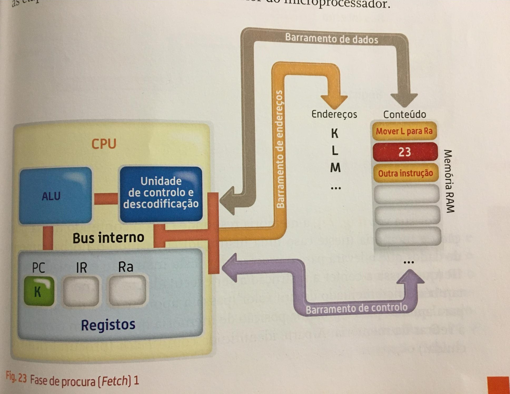

Os microprocessadores assentam a mesma arquitetura que é constituída pelos blocos(Arquitetura padrão de um microprocessadores).
Irei explicar o que significa cada um dos blocos: Unidade de Descodificação - tem função de indicar qual é o tipo de instrução como (ler da memória, adicionar dois valores, etc). PC - Program Counter (registo de programa) é onde guarda os endereço da próxima inscrição para ser lida da memória, sendo assim, é um apontador de posição de memória. IR - Instruction Register ( registro de inscrição ) t6em que ter uma cópia da inscrição a ser executada no momento. SP - stack pointer ( apontador da pilha) guarda a informação de retorno à rotina que está a ser executada antes de uma interrupção. Ro...Rn - registers ( unidade de registros) memórias internas onde temporariamente são armazenados os dados e resultados com que o CPU trabalha . Acumulador - registo associado à ALU que serve de buffer enquanto a outra entrada da ALU ainda não tem um valor carregado, serve em alguns processadores para guardar o resultado de cada operação. Flags ( registos de estado)são responsáveis por guardar o estado resultante a cada operação realizada pela ALU. Registo Temporária - server para armazenar o resultado de uma operação realizado pela ALU enquanto o barramento de dados se encontra ocupado.
Sucedem as etapas do ciclo mencionado, no interior do microprocessador. Esse exemplo consiste na leitura de um conteúdo de memória para um registo interno do CPU, imagem da fase de procura (fetch)1
Na segunda fase a unidade de controlo coloca no barramento de endereços o conteúdo do PC (K)e através do barramento de controlo envia um comando de leitura do conteúdo da posição K da memória mostrando no seguinte exemplo da fase de procura (fetch)2
A memória é colocado no barramento de dados que o levará para o processador essa instrução é copiada para o IR, o PC é também incrementado de um valor para apontar para a próxima posição de memória e assim a parte identifica como Fetch fica concluída, imagem de procura(fetch)3
A unidade de descodificação recebe a instrução presente no IR, descodificada-ºa e entrega-a a UC numa linguagem que se compreenda a seguinte imagem mostra a fase de descodificação.